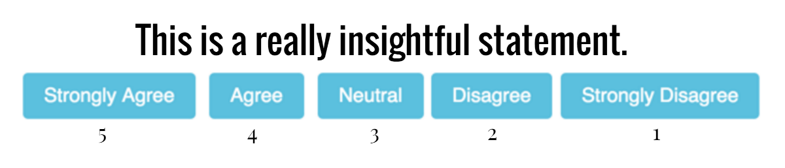
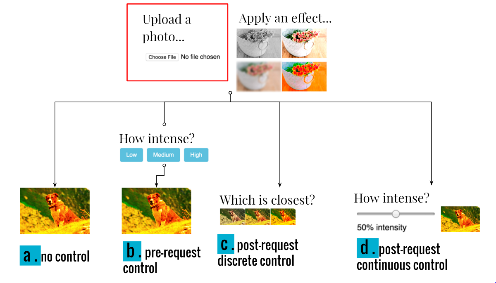
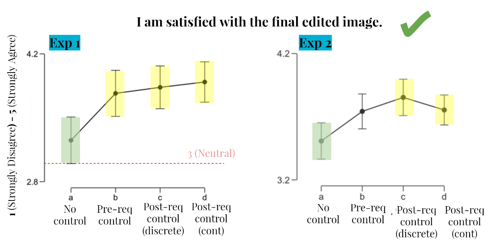
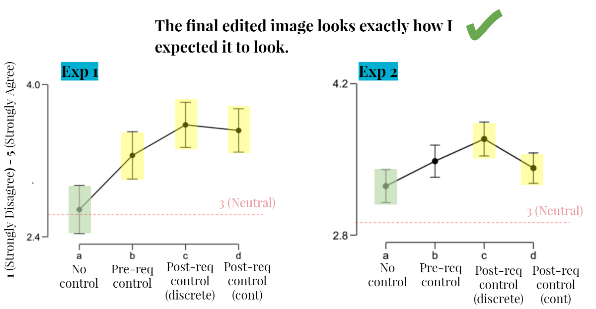
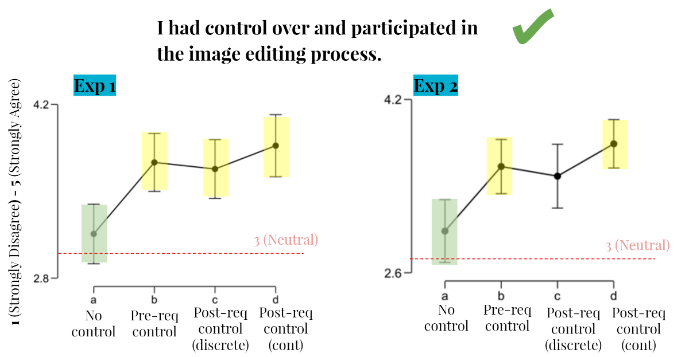

During the summer of 2016, I interned at Adobe Research in the Creative Technologies Lab. Within the CTL, I worked closely with the Scout team to explore the (still under the works) idea of a "creative concierge" platform.
I ended up dividing the problem into three different points:
Creative needs vs. Time and/or Skills
Mostly everyone has creative needs. That being said, not everyone has the capacity to fulfill those needs by themselves; working parents might not have the time, and specialized real estate aents may not have the technical skills to work with creative software like Photoshop, Lightroom, and Illustrator. As a workaround to these obstacles, many people resort to "creative concierge"type platforms, whereby a creative request is fulfilled by some third party (usually a creative professional)for a hefty amount of money. Examples of such platforms are Fiverr, Dribbble, and 99Designs.
Back and forth communication is inefficient
One common problem that current platforms fail to address is the inefficiency of a back and forth communication. Upon fulfillment of a creative request, it's pretty common for the client to not be 100 percent satisfied - and to make additional requests and clarifications to the creative professional, resulting in increasingly long email chains, time spent on a single project, and work on the creative professional's part. Thinking on a broader scale, these inefficiencies would hinder the ability of any creative concierge product to scale to larger degrees.
Less user control = Less creative involvement
Past HCI work has shown that giving control leads to greater feelings of creative empowerment and involvement. In a transactional-based platform at a company whose biggest commodity is creativity, how do we preserve feelings of creative control and empowerment?
So - if we constrain communication to a one-way communication (i.e. someone makes a request, someone fulfills the request, and that's it), how much control can we give to users such that they feel 1) satisfied and 2) creatively empowered?
Through a combination of focus groups and personal experiences, I identified a general process that requesters (i.e. people who make requests for creative products) follow:
The first question I set out to answer was how the timing of control affected users' satisfaction and feelings of creativity, if at all.
To answer this question, I programmed up a simple web page with the following flow:
Upon selecting one of four pre-chosen photos and an effect to apply to it, users would be directed to one of four different pages:
At the end of the webpage, users answered statements by showing their agreement with statements like "The image looked exactly how I expected it to look" and "I am creative" in Likert type format:

I put the website on Amazon Mechanical Turk and gathered results from approximately 350 subjects over the course of several days.
I observed three key things:
The findings were based on several ANOVA tests run, and the 95 percent confidence intervals that were constructed from the data. While for a first experiment it certainly seemed like any control was always beneficial, I wanted to make sure that these results would hold true even when users edited their own personal images, rather than a pre-selected image that they have no personal attachment to.
I modified the website to allow users to upload their own images, preserving all other aspects of the experiment setup:

Overall, the results from experiment 2 supported the original findings in experiment 1:


After confirming that user behavior did not change depending on ownership of the edited image, I also wanted to see whether behavior would change when more complex effects (i.e. effects not easily reproducible on one's own) were given. Additionally, on a more UI-facing perspective, I was curious as to whether there was a difference in satisfaction and creativity when users were gieven discrete or continuous control.
I preserved the initial approach but replaced the simpler effects with more complex ones, and I changed the interface of the discrete controller to match the continuous controller. Now, they both look like sliders; the former snaps to interval tick marks while the latter is a spectrum.
After collecting results, it was easy to compare all experimental results together in a single table:
Post-request control is more favorable than Pre-request control, which is roughly equivalent to giving no control
Based on the data and written feedback, it was observed that the primary reason why users were ever dissatisfied with an edited image differed between those who had pre-control and those with post-control. For users who were given control before the request had been fulfilled, a significant number of people said that they wished they had been given control after the image was returned (i.e. pre-control users wanted post-control). On the other hand, post-control users simply said they wished they had been given even more control.
Tradeoff between satisfaction and creative empowerment through control
As we had intuitively reasoned earlier on, there is indeed a significant tradeoff between a user's satisfaction level with the final edited image, the creative process, and their feelings of creative involvement. Creating an Adobe product that both satisfies users and creatively empowers them will be a process of determining the opportunity costs and pros and cons of prioritizing one over the other.
A paper and a poster at CHI may or may not be on the horizon. I'm also interested in exploring and quantifying exactly at what point the amount of control given to a user will begin negatively impacting satisfaction (i.e. 35 sliders for a single image edit). It'd also be good to verify these results again through different user interfaces.
Happy to say that my research has also been used to inform the design of Adobe's creative concierge idea and Adobe Post / Spark!